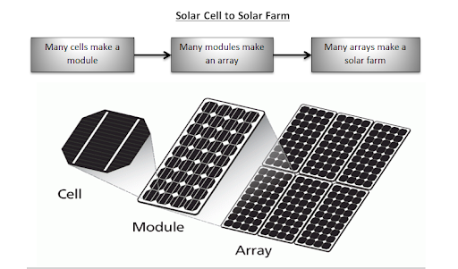
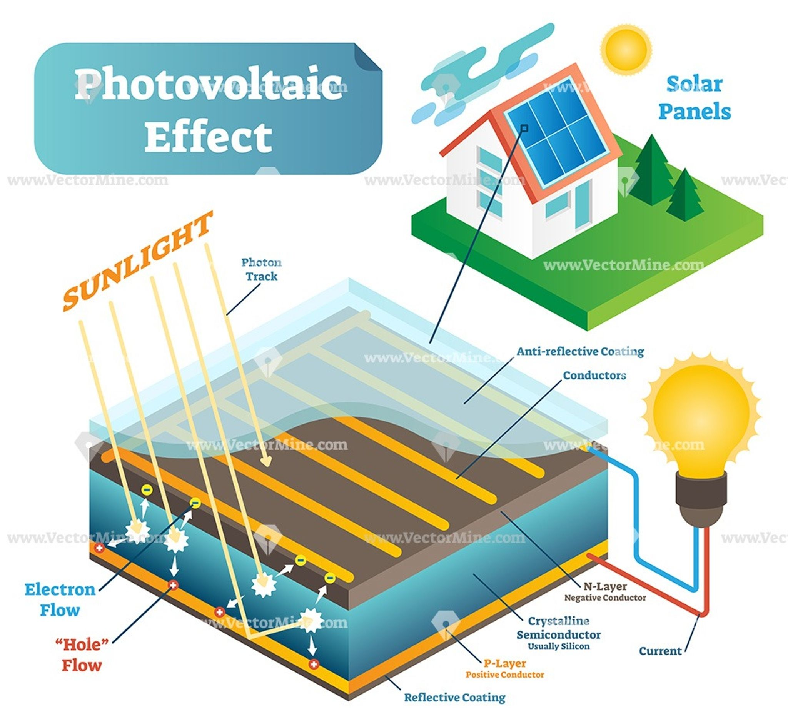
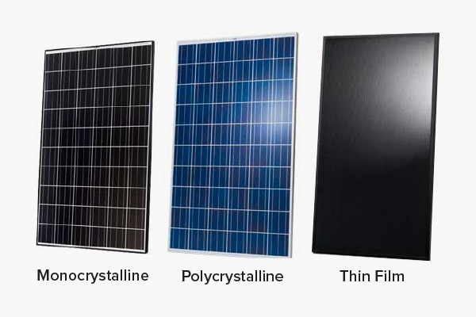
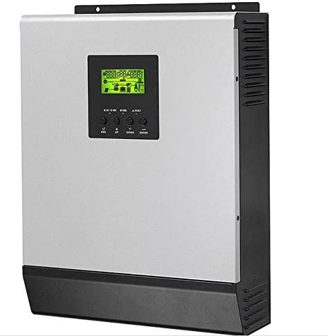
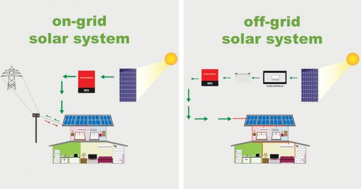
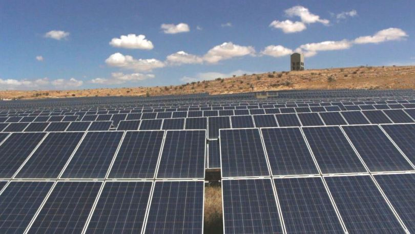

PV SYSTEM
Environmental benefits of domestic solar energy systems

All nations of the world depend on fossil fuels for their energy needs. However the obligation to reduce CO2 and other gaseous emissions in order to be in conformity with the Kyoto agreement is the reason behind which countries turn to non-polluting renewable energy sources. In this paper the pollution caused by the burning of fossil fuels is initially presented followed by a study on the environmental protection offered by the two most widely used renewable energy systems, i.e. solar water heating and solar space heating. The results presented in this paper show that by using solar energy, considerable amounts of greenhouse polluting gasses are avoided. For the case of a domestic water heating system, the saving, compared to a conventional system, is about 80% with electricity or Diesel backup and is about 75% with both electricity and Diesel backup. In the case of space heating and hot water system the saving is about 40%. It should be noted, however, that in the latter, much greater quantities of pollutant gasses are avoided. Additionally, all systems investigated give positive and very promising financial characteristics. With respect to life cycle assessment of the systems, the energy spent for manufacture and installation of the solar systems is recouped in about 1.2 years, whereas the payback time with respect to emissions produced from the embodied energy required for the manufacture and installation of the systems varies from a few months to 9.5 years according to the fuel and the particular pollutant considered. Moreover, due to the higher solar contribution, solar water heating systems have much shorter payback times than solar space heating systems. It can, therefore, be concluded that solar energy systems offer significant protection to the environment and should be employed whenever possible in order to achieve a sustainable future.
Definition of Solar panels
Solar panels are those devices which are used to absorb the sun's rays and convert them into electricity Description: A solar panel_ is actually a collection of solar cells, which can be used to generate electricity through photovoltaic_ effect. These cells are arranged in a grid-like pattern on the surface of solar panels.
photo of photovoltic effect
defination of photovoltaic effect The photovoltaic effect is a process that generates voltage or electric current in a photovoltaic cell when it is exposed to sunlight. It is this effect that makes solar panels useful, as it is how the cells within the panel convert sunlight to electrical energy. The photovoltaic effect was first discovered in 1839 by Edmond Becquerel. When doing experiments involving wet cells, he noted that the voltage of the cell increased when its silver plates were exposed to the sunlight Thus, it may also be described as a set of photovoltaic modules, mounted on a structure supporting it. A photovoltaic (PV) module is a packaged and connected assembly of 6×10 solar cells. When it comes to wear-and-tear, these panels are very hardy. Solar panels wear out extremely slow. In a year, their effectiveness decreases only about one to two per cent (at times, even lesser). Most solar panels are made up using crystalline silicon solar cells. Installation of solar panels in homes helps in combating the harmful emissions of greenhouse gases and thus helps reduce global warming. Solar panels do not lead to any form of pollution and are clean. They also decrease our reliance on fossil fuels (which are limited) and traditional power sources. These days, solar panels are used in wide-ranging electronic equipments like calculators, which work as long as sunlight is available. However, the only major drawback of solar panels is that they are quite costly. Also, solar panels are installed outdoors as they need sunlight to get charged.
Types of Solar Panel

| Solar Cell Type | Efficiency Rate | Advantages | Disadvantages |
|---|---|---|---|
| Monocrystalline Solar Panels (Mono-SI) | ~20% | Relatively low costs; easy to produce & flexible | Expensive |
| Polycrystalline Solar Panels (p-Si) | ~15% | Lower price | Sensitive to high temperatures; lower lifespan & slightly less space efficiency |
INVERTER
A solar inverter or PV inverter, is a type of electrical converter which converts the variable direct current (DC) output of a photovoltaic (PV) solar panel into a utility frequency alternating current (AC) that can be fed into a commercial electrical grid or used by a local, off-grid electrical network. It is a critical balance of system (BOS)–component in a photovoltaic system, allowing the use of ordinary AC-powered equipment. Solar power inverters have special functions adapted for use with photovoltaic arrays, including maximum power point tracking and anti-islanding protection.
AC current
Alternating current (AC) is an electric current which periodically reverses direction and changes its magnitude continuously with time in contrast to direct current (DC) which flows only in one direction. Alternating current is the form in which electric power is delivered to businesses and residences, and it is the form of electrical energy that consumers typically use when they plug kitchen appliances, televisions, fans and electric lamps into a wall socket. A common source of DC power is a battery cell in a flashlight. The abbreviations AC and DC are often used to mean simply alternating and direct, as when they modify current or voltage.
DC current
Direct current (DC) is one-directional flow of electric charge. An electrochemical cell is a prime example of DC power. Direct current may flow through a conductor such as a wire, but can also flow through semiconductors, insulators, or even through a vacuum as in electron or ion beams. The electric current flows in a constant direction, distinguishing it from alternating current (AC). A term formerly used for this type of current was galvanic current.
OFF GRID SYSTEM
A stand-alone power system (SAPS or SPS), also known as remote area power supply (RAPS), is an off-the-grid electricity system for locations that are not fitted with an electricity distribution system. Typical SAPS include one or more methods of electricity generation, energy storage, and regulation. Storage is typically implemented as a battery bank, but other solutions exist including fuel cells. Power drawn directly from the battery will be direct current extra-low voltage (DC ELV), and this is used especially for lighting as well as for DC appliances. An inverter is used to generate AC low voltage, which more typical appliances can be used with.A typical stand-alone solar PV system at a sewage treatment plant in Santuari de Lluc, SpainStand-alone photovoltaic power systems are independent of the utility grid and may use solar panels only or may be used in conjunction with a diesel generator, a wind turbine or batteries.
ON GRID SYSTEM
A grid-connected photovoltaic system, or grid-connected PV system is an electricity generating solar PV power system that is connected to the utility grid. A grid-connected PV system consists of solar panels, one or several inverters, a power conditioning unit and grid connection equipment. They range from small residential and commercial rooftop systems to large utility-scale solar power stations. Unlike stand-alone power systems, a grid-connected system rarely includes an integrated battery solution, as they are still very expensive. When conditions are right, the grid-connected PV system supplies the excess power, beyond consumption by the connected load, to the utility grid.
SHAMS ALHASHIMIAH
A grid-connected photovoltaic system, or grid-connected PV system is an electricity generating solar PV power system that is connected to the utility grid. A grid-connected PV system consists of solar panels, one or several inverters, a power conditioning unit and grid connection equipment. They range from small residential and commercial rooftop systems to large utility-scale solar power stations. Unlike stand-alone power systems, a grid-connected system rarely includes an integrated battery solution, as they are still very expensive. When conditions are right, the grid-connected PV system supplies the excess power, beyond consumption by the connected load, to the utility grid.